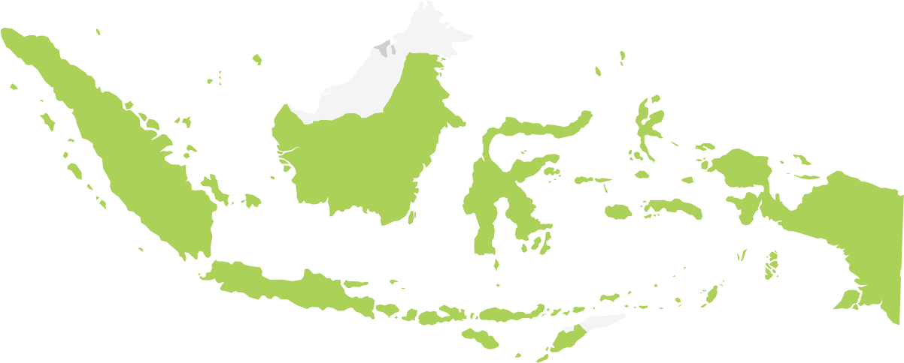
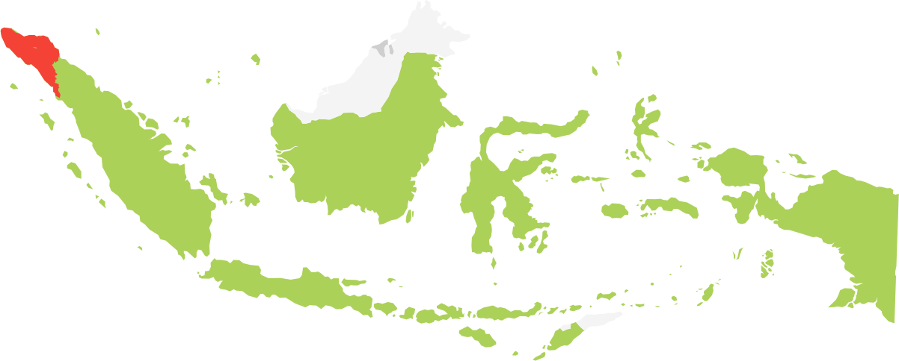
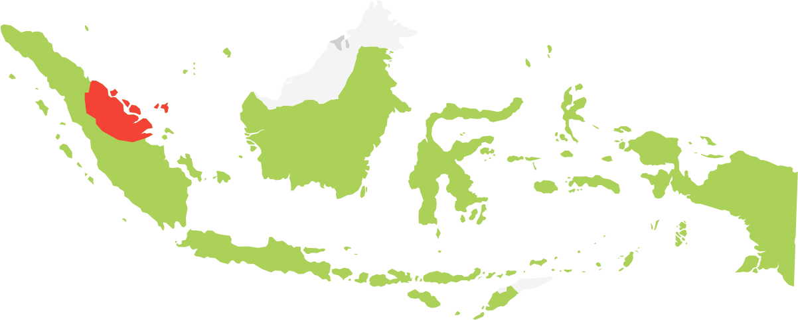
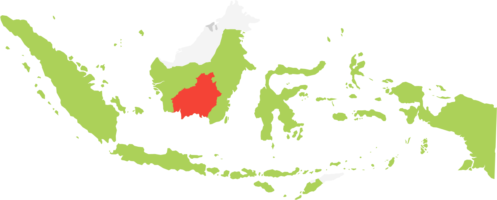
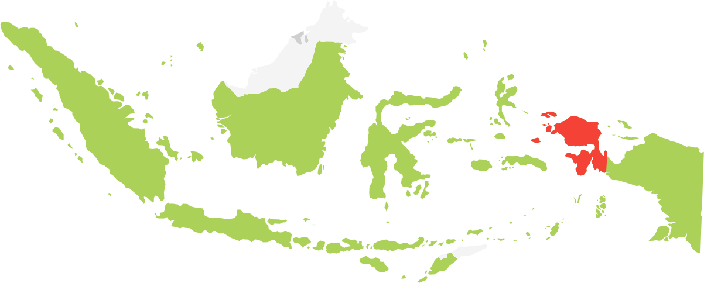

Ekuatorial
Ekuatorial
Lima cerita tentang krisis hutan di Indonesia
Stories Beyond the Pixels
    
Rawa Tripa, Upaya Bangkit dari Kehancuran
HTI
Kebun Rakyat
Abainya Negara di Bumi Lancang Kuning
HTI
Kebun Rakyat
Salah Urus di Taman Nasional Tesso Nilo
HTI
Kebun Rakyat
Semu, Investasi Sawit di Eks Gambut Sejuta Hektare
Sawit
Gambut
Pertahanan Hijau dalam Kepungan Sawit dan Tambang
Sawit
Hutan Adat